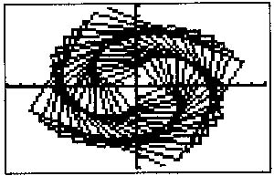

Mathematics
The Best Math Department Within 3 Spatial
Dimensions
(semi-dimensions included)
| Richard
Stokes: |
geometry |
Norma Munoz: |
geometry, alg 2,
precalculus |
| Sandy Potts: |
geometry, alg 2 |
Cathy Morgan: |
statistics |
| Melony Matthews: |
geometry, math modeling |
Cathy McBride: |
math modeling |
| Daryl Taylor: |
alg 1, geometry, alg 2 |
Marita Schmidt: |
alg 2, precalculus |
| Patrick Simmons: |
alg 1, geometry |
Paul
Fulkerson: |
alg 2, calculus,
precalculus |
| Tom
Decker: |
alg 1, geometry |
Mark Daniels: |
precalculus, calculus,
ind. study- chaos, department chair |
| Pam
Connolly: |
Credit Plus
math |
Randy Brown: |
alg 1 |
| Chris Gordon: |
resource math, resource
geometry |
Carla Reed: |
alg 1, alg 2 |
|
|

The graph pictured is a variation of
Fermat's Spiral which has the general equation r²=theta. We use
this graph as our department logo.
Our version of Fermat's Spiral was generated in polar form with a
theta-step of 1.5 rad.
We chose this graph as our logo, for we feel it stands for discovery
and creativity through MATHEMATICS.
|